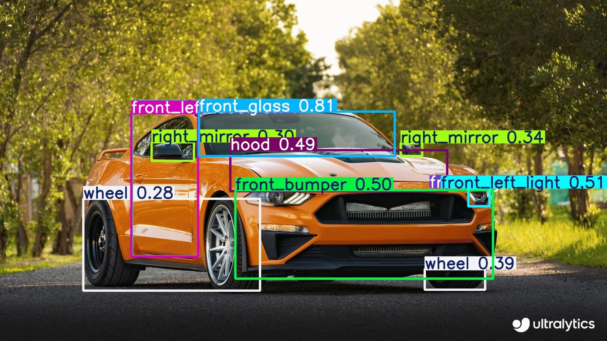

Automotivo · 6 estações · Brasil-SPMontadora reduz refugo em 41% e ganha rastreabilidade por chassi
Problema. Inspeção 100% manual em 6 estações da linha de pintura — repintura custava R$ 1.200 por unidade e indicadores chegavam ao gestor 24h depois.
O que entregamos. Câmeras industriais 4K + modelos de anomalia treinados em 800 imagens de defeitos reais. Detecção em 80 ms, integração ao MES via OPC UA, rastreabilidade automática por número de chassi.
−41%refugo em 90 dias
80 msinferência por peça
6 sem.do piloto ao go-live
R$ 4,1Meconomia anualizada
“Em 90 dias paramos de discutir a inspeção visual em reunião de qualidade. O time agora age sobre o defeito raiz, não corre atrás dele.” — Gerente de Qualidade, montadora regional